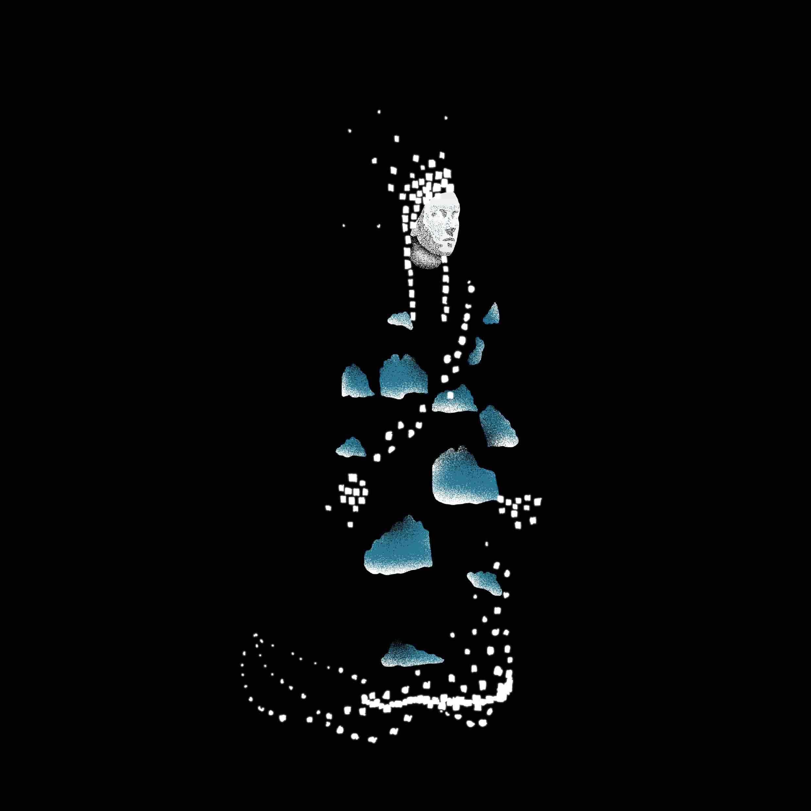
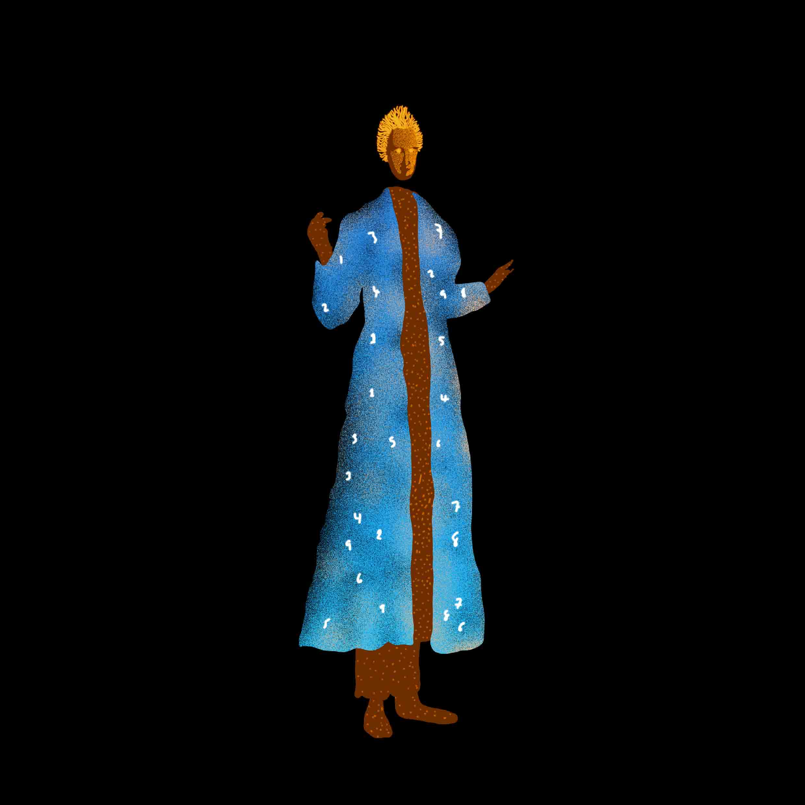
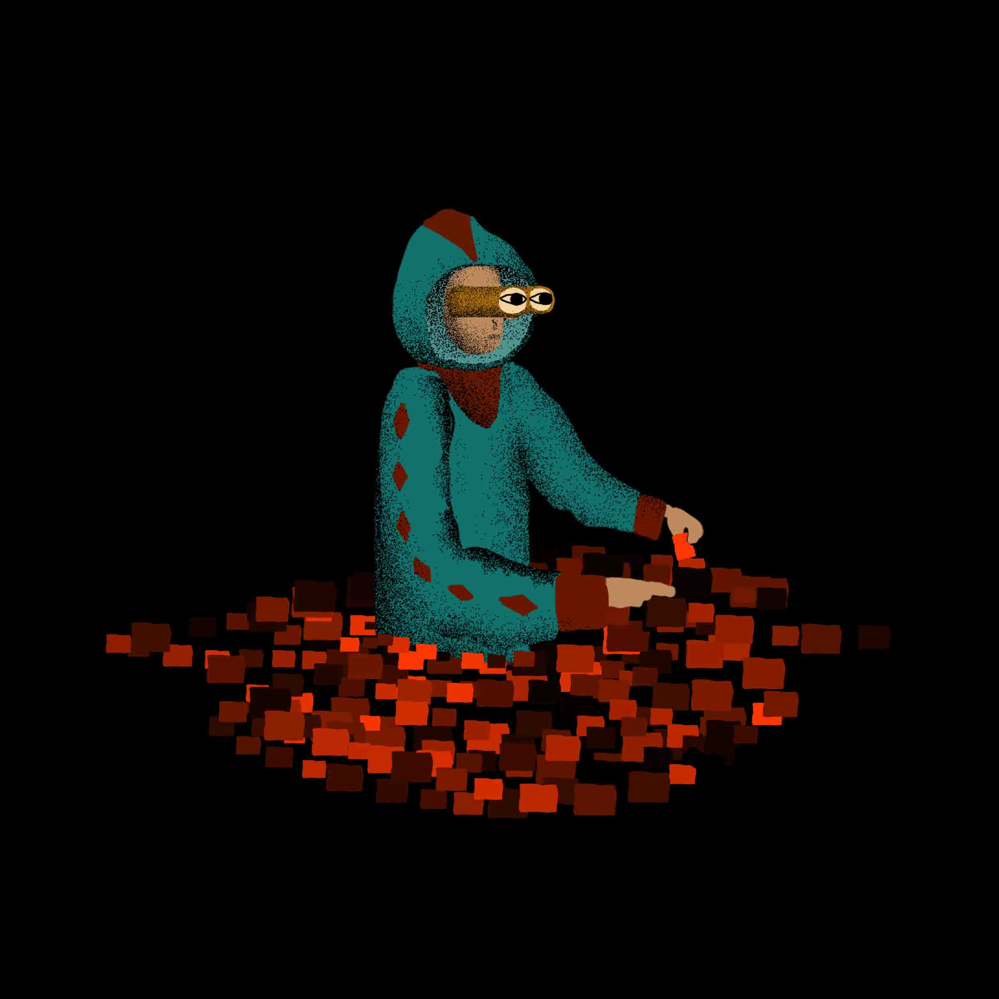
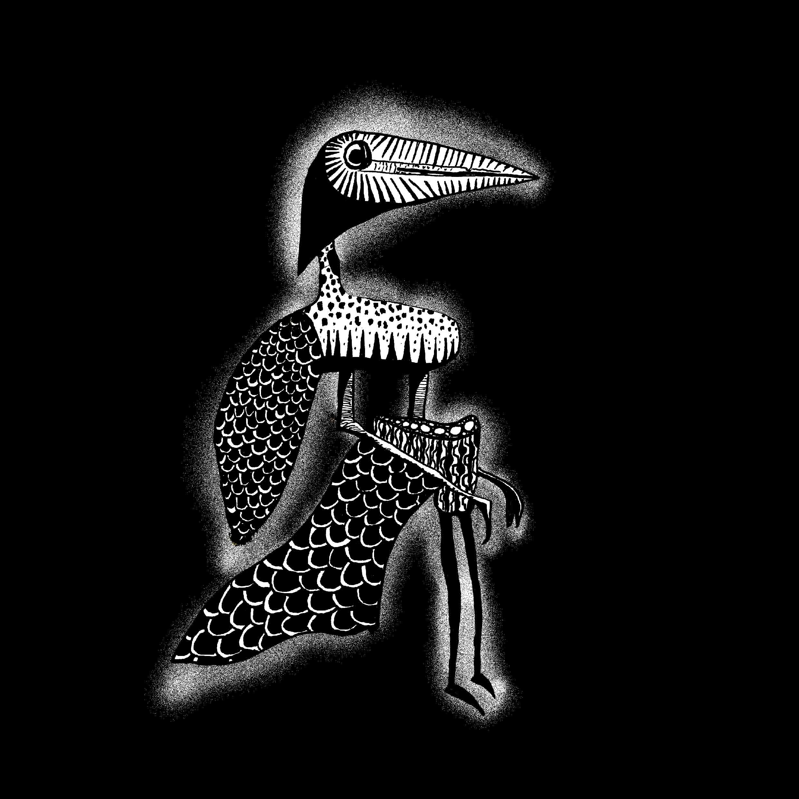
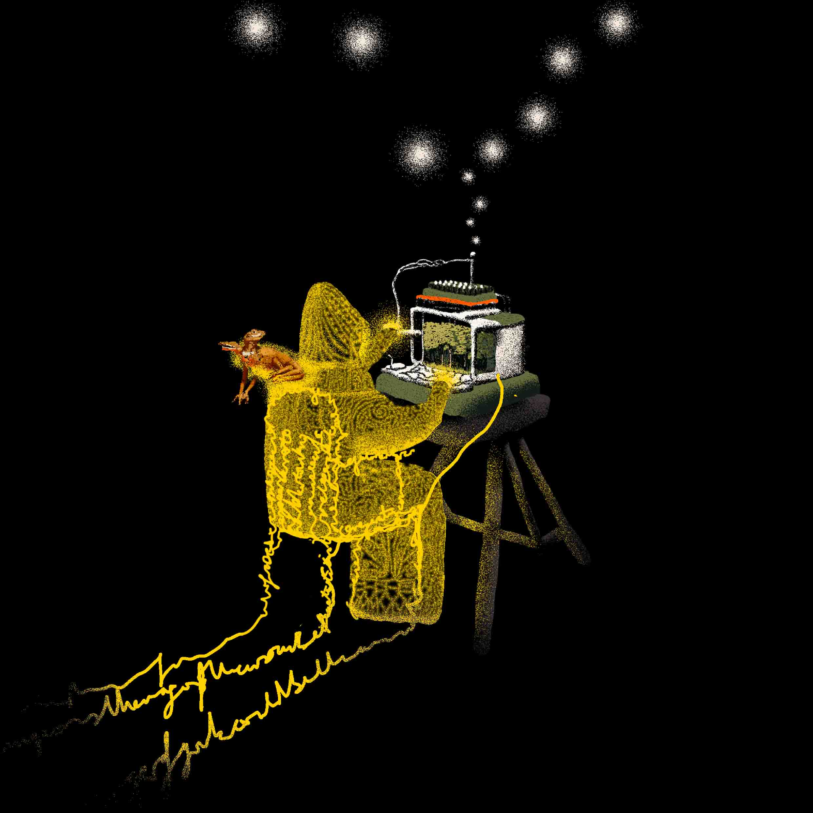

08_The Infinite Image Library
This project primarily highlights the existence of the Infinite Image Library and its unique classification system that makes it a spatial construct needing to be understood and explored architecturally. As physical construction becomes increasingly inviolable, the Library reveals a new way to design, in Latent Space with its 800 dimensions. The project addresses various cynicism over the emergence and use of AI tools in image production. It highlights the fundamental need for multidisciplinary explorations of these nascent technologies, for which coherent frameworks are critically lacking . The animation is simultaneously ABOUT the library; can be found WITHIN the library; and is in fact OF the library. The medium is the message. And it questions the very nature of future spatial practice.
The Infinite Image Library (10mins)

The Knowledge Forager




